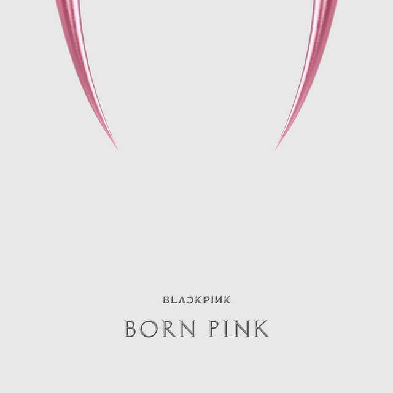

ÁLBUM · 2020
THE ALBUM
Escuchar en SpotifyReproducir aquí
Reproductor de Spotify. Necesita conexión a internet.
JISOO · JENNIE · ROSÉ · LISA
BLACKPINK une cuatro personalidades en un sonido que mezcla pop, rap y una energía inconfundible. Desde su debut en 2016, la música es el punto de encuentro con BLINKs de todo el mundo.
Descubre su músicaEL SONIDO DE BLACKPINK
Dos álbumes para volver a escuchar.
ÁLBUM · 2020
Reproductor de Spotify. Necesita conexión a internet.

ÁLBUM · 2022
Reproductor de Spotify. Necesita conexión a internet.
EL GRUPO